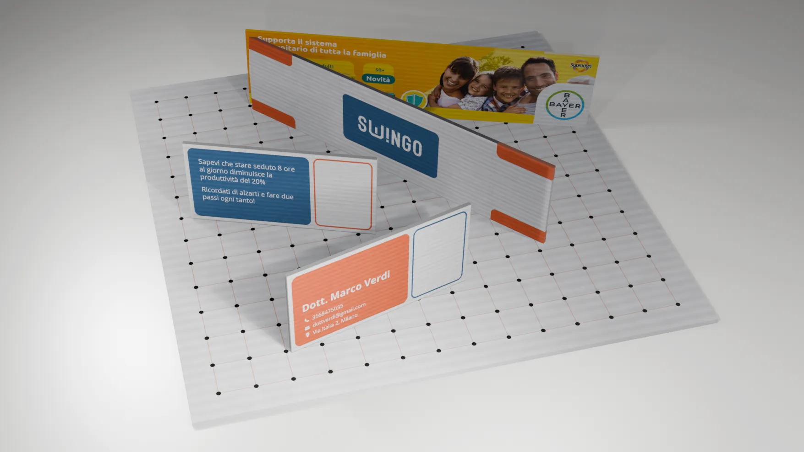
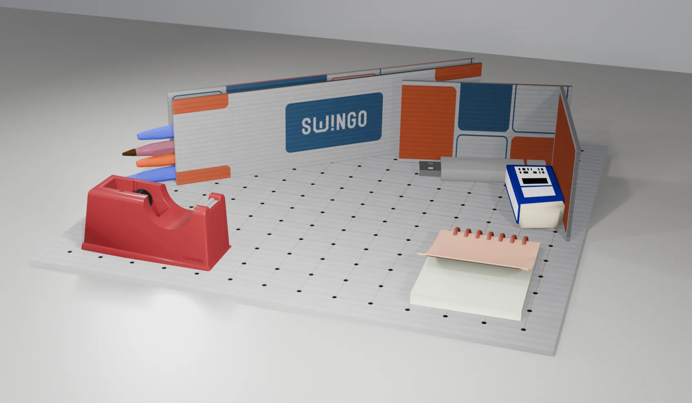
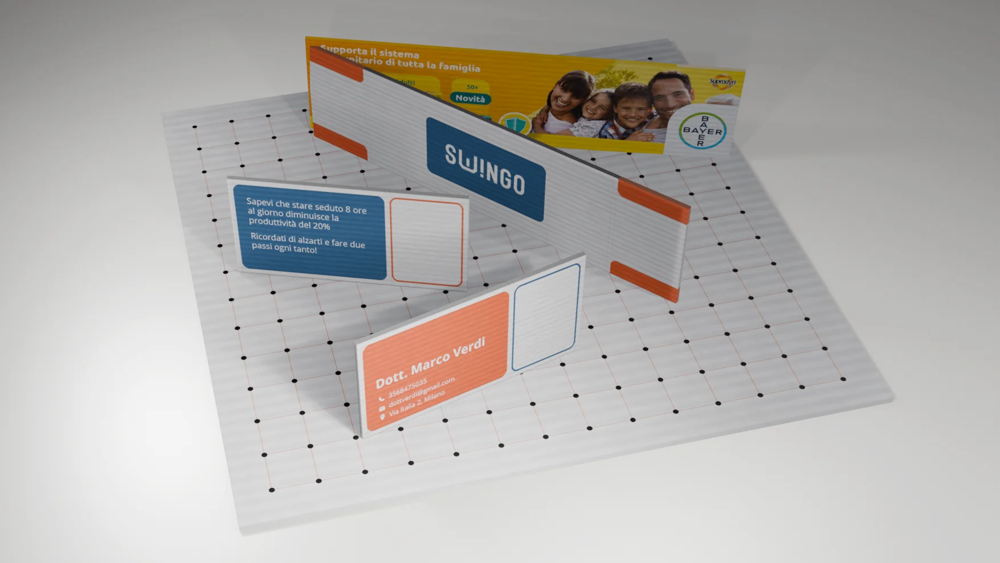
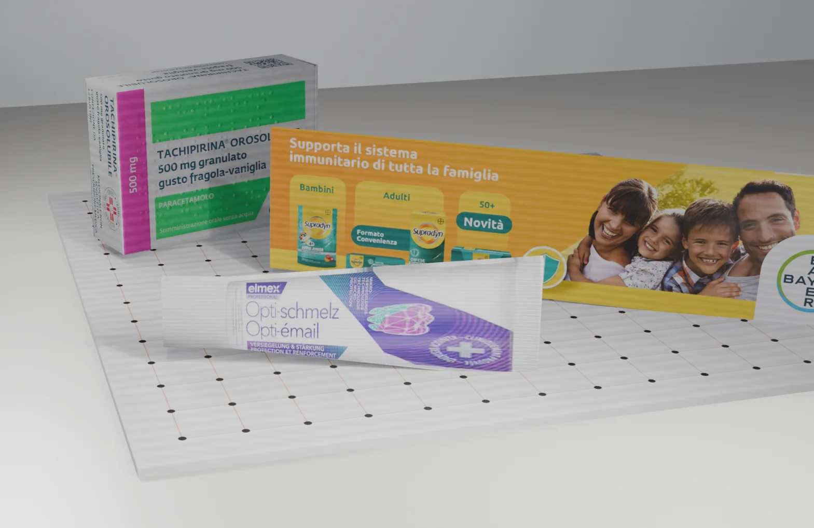
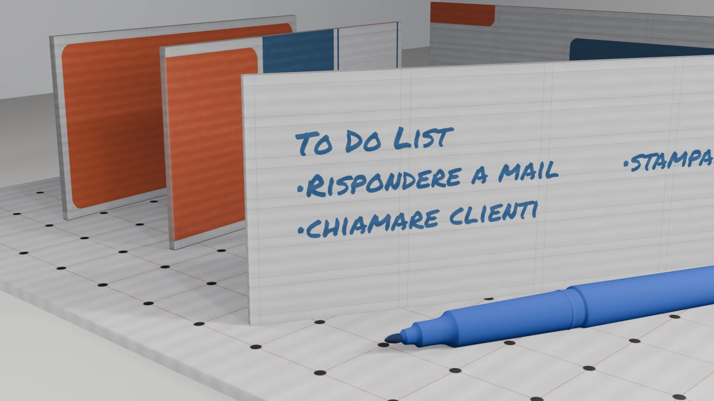
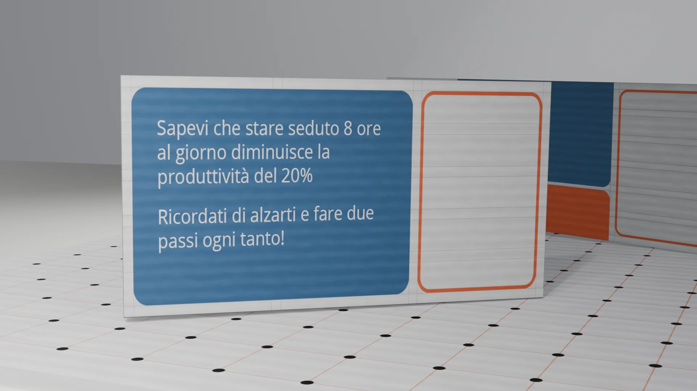
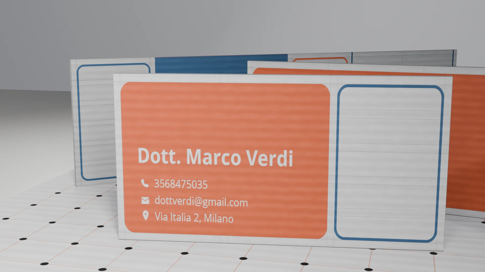

Swingo è un brand reminder da scrivania, destinato alle aziende farmaceutiche mediche/farmaceutiche che lo regalano ai loro clienti. L’idea alla base del progetto è portare un nuovo concept in questo mondo, ormai saturo di soluzioni tradizionali e simili tra di loro.
Non si tratta di un gadget statico bensì di una soluzione modulare grazie alla base magnetica che permette di disporre liberamente le spandine verticali per organizzare lo spazio in base alle proprie necessità. Si possono creare portapenne, scompartimenti o semplici aree destinate all’allocazione di oggetti affinché tutto abbia un suo posto prestabilito, risolvendo così il problema del disordine sulla scrivania.
Le stesse spandine acquisiscono poi la funzione di brand reminderpotendo contenere una grafica legata ai prodotti dell’azienda fornitrice, e magari anche acquisendone la sagoma. Ma c’è di più: Swingo è un gadget dinamico anche perché può adattarsi alle esigenze di ciascun professionista. Oltre ai contenuti pubblicitari possono essere stampate le informazioni di contatto, affinché il cliente le abbia sempre visibili, o, trasformate in un pos-it riutilizzabile mediante un apposito trattamento superficiale.
Swngo diventa infine il punto di incontro tra fornitore e cliente; a ogni visita il rappresentante dell’azienda può portare in dono una nuova spondina, ampliando le possibilità del gadget man mano che il rapporto professionale si consolida.
L’intero progetto è realizzato in cartone abbinato a dei semplici punti magnetici, che permettono di mantenere un costo abbastanza ridotto anche grazie all’alta efficienza di produzione.
3° Classificato
CONCORSO #OSSODURO8 PRORAMILLENOTE
Maggio 2026





